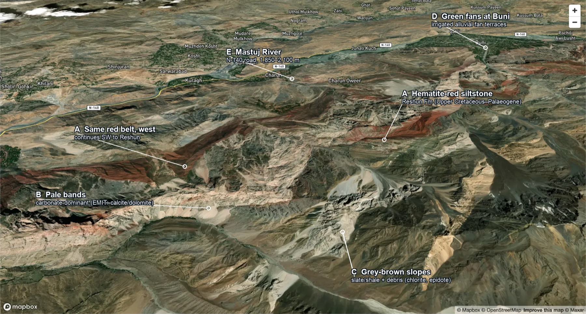
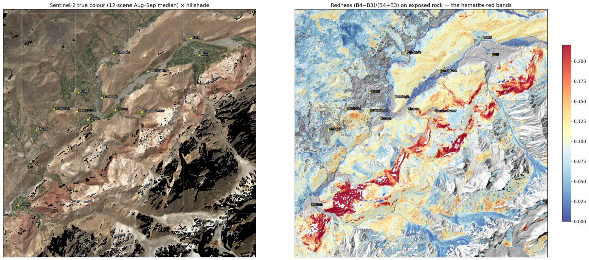
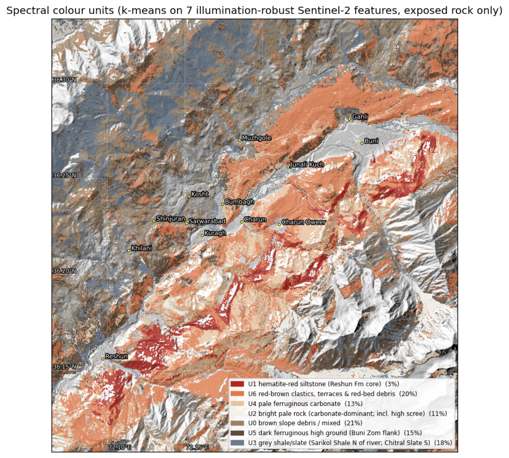
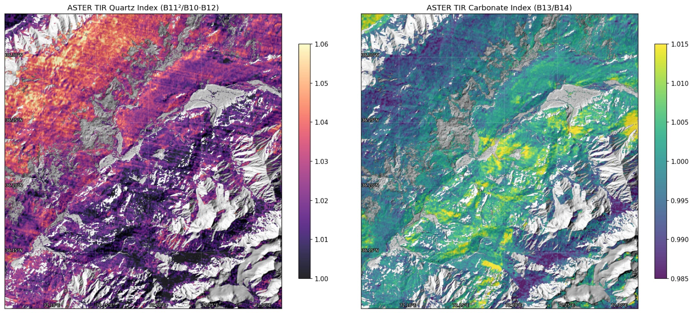
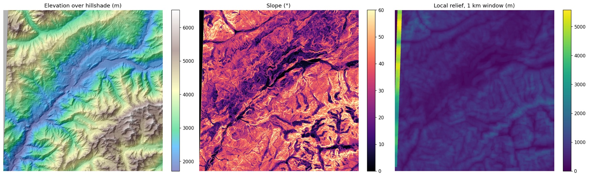
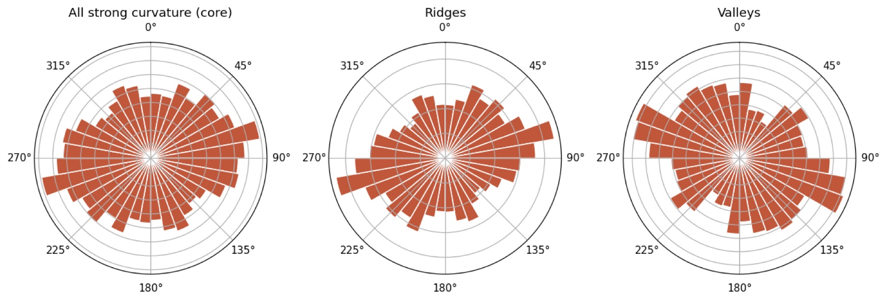
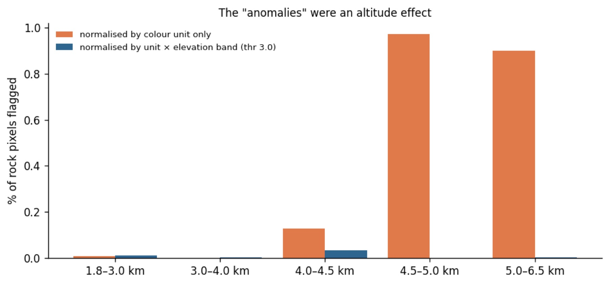
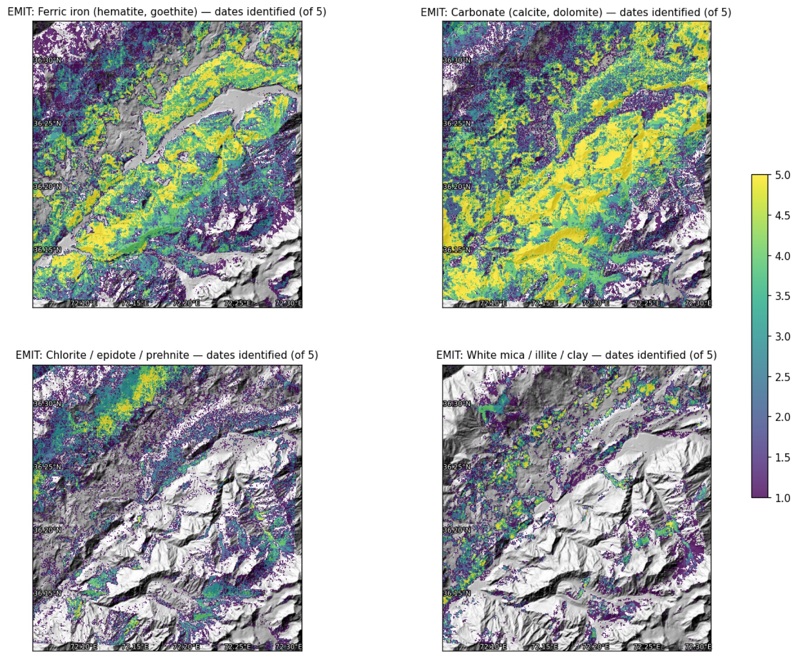
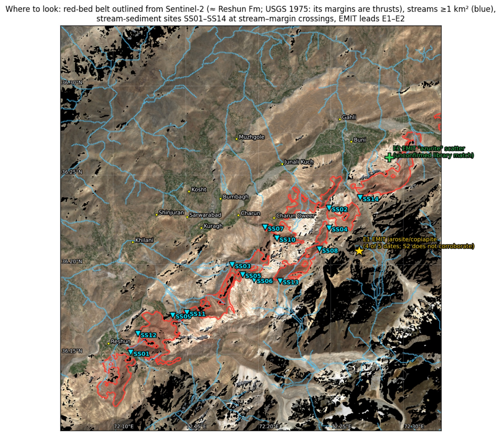
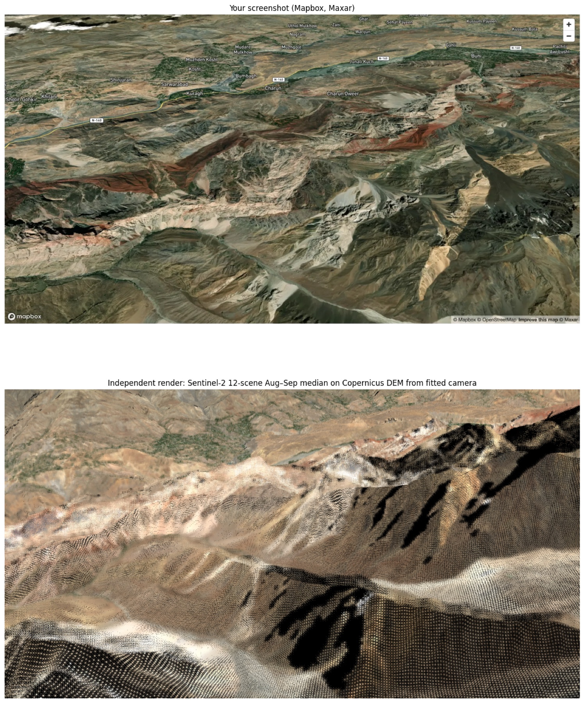

What the colours in the Charun–Buni view are, how the terrain is built, and what DEM, Sentinel-2, ASTER, EMIT hyperspectral and Sentinel-1 radar show about ore potential.
RegenX.eco · 28 Sep 2026 · analysis run on public satellite archives
The view looks north-north-west across the Mastuj River, from above the ridge south of Charun Oweer. I geocoded all 24 village labels in the screenshot from OpenStreetMap and used them to fit a perspective camera. The fit places the viewpoint over 36.11°N 72.22°E, heading about 349°.
Village labels all sit on the valley floor, so they fix direction well but distance poorly. An independent render from that camera does not reproduce the foreground (see Methods). The location is therefore fixed from the red bands themselves. In map view they are unmistakable (§2). Your view spans the valley from Sholiri Gohkir (72.107°E) to Pachili Awi Lusht (72.300°E). It runs from the Mulkhow villages in the north (36.33°N) to the ridges south of the red belt (≈36.16°N).

| Place | Lat °N | Lon °E | Role |
|---|---|---|---|
| Charun | 36.2273 | 72.1861 | Valley village; Charun Gol is the type locality of the Charun Quartzite |
| Charun Oweer | 36.2265 | 72.2106 | Directly north of the thickest red bands |
| Kuragh | 36.2196 | 72.1609 | Devonian fossil ridge (Hayden 1914) just south |
| Buni | 36.2701 | 72.2625 | NE end of the belt; the Reshun Fm crosses the river here |
| Reshun | 36.1536 | 72.0993 | SW end; the formation's informal type section |
| Red-belt centroid | 36.200 | 72.205 | Sentinel-2 outline, 43.8 km² in 14 polygons |
Karl Stauffer's 1975 USGS reconnaissance of the central Mastuj valley covered exactly this ground. He mapped the Reshun Formation as "massive, light-brown, ridge-forming conglomerate and beds of red siltstone". He traced it along the left bank from Reshun to Buni and noted that its upper and lower limits are north-west-dipping thrust faults. Terraces fed by these siltstones carry soil that he called always bright red.
A redness index on the Sentinel-2 12-scene composite reproduces that belt in map view. It follows the same bank, the same ENE strike and the same end points.

An unsupervised clustering of seven illumination-robust Sentinel-2 features splits the exposed rock into seven colour units. I then described each unit with two independent sensors: ASTER thermal emissivity (quartz and carbonate) and the minerals EMIT identified on the same ground.

| Unit | Area | Redness | ASTER QI | ASTER CI | EMIT ferric | EMIT carbonate | EMIT chlorite/epidote | EMIT white mica | Reading |
|---|---|---|---|---|---|---|---|---|---|
| U1 | 3% | 0.208 | 1.016 | 1.0006 | 96% | 74% | 23% | 1% | Reshun Fm red siltstone core |
| U6 | 20% | 0.119 | 1.020 | 1.0008 | 74% | 86% | 4% | 8% | Red-brown clastics, terraces, red-bed debris |
| U4 | 13% | 0.084 | 1.014 | 1.0028 | 63% | 89% | 4% | 3% | Pale ferruginous carbonate (Shogram dolomite, limestone-clast conglomerate) |
| U2 | 11% | 0.043 | 1.011 | 0.9984 | 10% | 55% | 12% | 4% | Bright pale rock, including high scree |
| U0 | 21% | 0.078 | 1.028 | 0.9970 | 33% | 62% | 15% | 11% | Brown slope debris, mixed |
| U5 | 15% | 0.095 | 1.025 | 0.9970 | 55% | 56% | 12% | 27% | Dark high ground on the Buni Zom flank (micaceous) |
| U3 | 18% | 0.050 | 1.034 | 0.9953 | 24% | 32% | 39% | 8% | Grey shale/slate: Sarikol Shale north of the river, Chitral Slate south |
EMIT columns: share of unit pixels where the mineral family was identified on ≥3 of 5 dates. QI = quartz index B11²/(B10·B12), higher = more quartz. CI = carbonate index B13/B14, higher = more carbonate.
The units agree across sensors. The red core is 96% ferric by EMIT. The pale units have the highest carbonate index. The grey unit has the highest quartz index (slates are quartz-rich) and the most chlorite and epidote. This is ordinary low-grade metamorphism, which the KP Directorate's report puts at no higher than greenschist facies for Chitral.

| Copernicus GLO-30 | View area | South-bank core |
|---|---|---|
| Area | 618 km² | 192 km² |
| Elevation range | 1,775–6,102 m | 1,858–5,843 m |
| Relief | 4,327 m | 3,985 m |
| Median elevation | 3,037 m | 3,347 m |
| Mean slope | 28.2° | 32.1° |
| Slopes >35° / >45° | 33% / 10% | 44% / 15% |
| Hypsometric integral | 0.33 | 0.38 |
The south bank rises almost 4 km from river to the Buni Zom massif in under 12 km. Slopes average 32°, and nearly half the core is steeper than 35°. A hypsometric integral of 0.33–0.38 marks a deeply dissected landscape: most rock mass sits low, cut by steep tributary gorges.
Ridge crests in the core trend 065–085°. Stauffer measured slate foliation striking N 60–80° E, so the ridges follow bedding and cleavage. Valleys cluster at 095–115°. As a control, the Mastuj valley itself runs 060° between Kuragh and Buni. Stauffer also mapped a younger set of near-vertical NNW faults, one just downstream of Kuragh. About 20% of the strong-curvature signal in the core trends NNW (150–010°).


Terrain here is arid and bare. After masking cloud, shadow, snow, vegetation and water, and applying a 0.02 reflectance floor, 68% of the grid is visible rock. At PL-53 in Upper Dir the figure was 11%. A null here therefore carries weight.
The method has range in this scene. The raw ferric index sits at a median robust z of +2.0 inside the red belt and −0.1 outside it. To stop the red beds swamping everything, I searched for anomalies within each colour unit. A pixel counted when it was anomalous in at least two of four indices (ferric B4/B2, gossan B11/B4, Al-OH/carbonate B11/B12, 900 nm Fe³⁺).
That first pass flagged 78 clusters. Almost all sat above 4,500 m on the Buni Zom flank, a median 350 m from snow. I then normalised by elevation band as well as unit, and the high-altitude cluster vanished completely. What remains at z > 3 is 8 specks of 0.3–2 ha, mostly outside your view. None coincides with an EMIT hit. Frost-shattered fresh rock, weathering rinds and mixed snow/debris pixels explain the first pass better than sulphide oxidation does.

Five EMIT L2B mineral-ID dates cover the area (Apr 2023 to Oct 2024), with retrievals on 93–100% of pixels. At PL-53 only 1 of 15 granules retrieved anything. For each mineral family I counted how many dates it was identified in each cell. I compared that with the count expected if identifications were random.
| Family | Cells on ≥3 dates | Expected if random | Reading |
|---|---|---|---|
| Carbonate | 94,170 | 100,730 | Everywhere; so common that persistence tells us nothing |
| Ferric iron | 66,198 | 52,562 | Real, spatially stable; tracks the red belt |
| Chlorite / epidote / prehnite | 20,321 | 5,370 | Real; greenschist-grade slate and volcanics |
| White mica / illite / clay | 12,991 | 1,340 | Real; micaceous slate and the Buni Zom flank |
| Jarosite / copiapite (sulphate) | 12 | 0.0 | Lead E1; one tight cluster |
| "Azurite" (Cu carbonate) | 23 | 0.1 | Lead E2; scattered |
| Non-mineral matches (plastic, dry grass) | 546 | 3.8 | Negative control |
E1, at 36.2090°N 72.2700°E and 3,590–3,835 m, is about 9 cells of jarosite/copiapite, identified on up to 4 of 5 dates. It sits about 1 km from the red-belt margin. Sentinel-2 shows nothing there: the ferric and Al-OH z-scores are both about 0.3–0.5. Jarosite also forms on ordinary pyritic black shale, and there is plenty of that in the Chitral Slate and Sarikol Shale.
E2, near Buni at 36.262°N 72.289°E, is 23 cells matched to azurite, scattered over about 1 km². Azurite's SWIR features resemble carbonate, and the surrounding rock is carbonate-rich. Treat it as unconfirmed.

Five pre-2008 AST_07XT scenes passed QC, with no clipped bands and 10–72% usable after the same masking. They give Al-OH, kaolinite/alunite and Mg-OH/carbonate indices. They match the unit picture above and add no independent alteration zone. There is no phyllic (sericite) or advanced-argillic (kaolinite/alunite) halo of the kind a porphyry would leave.
EnMAP has no archive scene over the core area (DLR STAC, 0 results). EnMAP and PRISMA can both be tasked at 30 m, and a summer EnMAP acquisition is the realistic upgrade over EMIT. Any hyperspectral sensor is still optical and still limited by snow and shadow.
Sentinel-1 radar sees through cloud and at night, but in 4 km of relief the viewing geometry matters. I modelled layover and shadow from the DEM separately for each orbit. Orbit 173 ascending and orbit 5 descending each observe 92% of the grid cleanly, and 97% is clean in at least one of them. Orbit 100 clips the edge (23%) and was set aside. Following earlier Karakoram work, backscatter is compared only within an orbit, never across orbits.
Radar does not detect ore minerals. It measures surface roughness and moisture, and here it confirms the colour units from an independent physical property. The same pattern appears in both geometries, so it is not a look-angle artefact:
| Median VH γ⁰ (dB), local incidence 25–55° | Orbit 173 asc | Orbit 5 desc |
|---|---|---|
| Red belt | −16.5 | −16.2 |
| Everything else | −15.0 | −15.0 |
| U2 bright pale rock (roughest) | −13.6 | −13.6 |
| U1 red siltstone core (smoothest) | −16.7 | −16.3 |
The red belt returns 1.1–1.5 dB less than its surroundings: the soft siltstone breaks down to fine debris. Stauffer described exactly this weakness. The siltstones acted as a lubricant along the thrusts. He mapped a landslide about 1 mile wide and 3 miles long near Reri that is largely red Reshun siltstone. He also found the Sarikol Shale between Lon and Kosht moving downslope as a whole. For any future access road or camp, the red belt is the ground to watch. InSAR time series from these same two orbits would measure that creep directly.
The mineral record for this corridor is thin, and the published sources are candid about it. Stauffer found no economic deposit in the central Mastuj valley. He recorded three things of interest:
| Commodity | What is reported | Where | Source |
|---|---|---|---|
| Antimony | Stibnite pieces brought in by villagers, not seen in place | Above Lon, NW of the river | USGS 1975 |
| Tungsten | Scheelite at 4.4 and 7.6 grains/g of heavy minerals, 2–3× the northern-Pakistan norm | Mouth of Reshun Gol; Mastuj River above it | USGS 1975 |
| Aluminium, iron | Bright-red nodular lateritic layer, 5–20 ft thick: 35% Al₂O₃, 16% Fe₂O₃, 10% FeO, 22% SiO₂. Judged uneconomic (high silica, remote) | Damun Gol, about 1 mile E of Reshun | USGS 1975 |
| Antimony–lead | Krinj–Kamal Gol, worked on a small scale since 1939; about 100,000 t "exploration information" status | Near Partsan, SW along the same belt | KP DGMM 2014 |
| Au–Ag–Pb–Sb | Boulangerite veins rich in gold and silver | Awireth, Sewakht (Lutkho valley) | KP DGMM 2014 |
| Antimony | Historic underground output of about 9,000 t stibnite ore at about 40% Sb | Awireth | search summary only |
| Iron | Laterite-type ironstones, judged uneconomic at altitude | Buni Zom (Golen Gol; Reshun side) | KP DGMM 2014 |
The KP Minerals Department's investor package places this ground in two proposed exploration blocks for Au–Ag–Sb along the Reshun Fault Zone: Block-05 "Mastuj" (184 km²) and Block-06 "Reshun" (191 km²). The same report is sober about scale. After 50 million years of uplift and erosion, it concludes that the chances of world-class ore bodies are minimal. The realistic target is small, structurally controlled, metamorphogenic vein deposits.
That fits everything the satellites show. A quartz–stibnite vein a metre wide is invisible in a 20 m or 60 m pixel, whatever the number of bands. Satellites can map the structure that hosts such veins, and the belt's thrust margins are that structure. The ground has to be sampled to find the veins themselves.

I computed the drainage network from the DEM (40 m D8, priority-flood filled). Every place where a stream of 1 km² or more crosses the red-belt margin is a candidate sampling site. After merging duplicates, 14 remain. A tributary crossing a thrust carries debris from any vein along it. Sediment at the crossing samples the whole upstream reach, and that is how Chitral's known Sb–Pb districts show up in regional geochemistry.
| Site | Lat °N | Lon °E | Catchment km² | Elev m | Note |
|---|---|---|---|---|---|
| SS01 | 36.1487 | 72.1150 | 116.5 | 1,980 | Reshun Gol; USGS scheelite sample reach. Re-sample first |
| SS02 | 36.2326 | 72.2486 | 20.8 | 2,619 | Gol draining towards Buni, NE belt |
| SS03 | 36.1994 | 72.1830 | 20.8 | 2,412 | Charun Gol, Charun Quartzite type section |
| SS04 | 36.2215 | 72.2489 | 18.3 | 2,877 | Same gol as SS02, upper margin |
| SS05 | 36.1941 | 72.1903 | 15.6 | 2,573 | Charun Gol, upper margin |
| SS06 | 36.1914 | 72.1984 | 13.3 | 2,744 | Charun Gol branch |
| SS07 | 36.2208 | 72.2049 | 6.9 | 2,170 | Charun Oweer gol, lower margin |
| SS08 | 36.2094 | 72.2427 | 6.7 | 3,221 | About 2.5 km downslope of EMIT lead E1 |
| SS09 | 36.1703 | 72.1431 | 4.0 | 2,155 | SW belt |
| SS10 | 36.2149 | 72.2131 | 3.7 | 2,416 | Charun Oweer |
| SS11 | 36.1720 | 72.1529 | 3.2 | 2,445 | SW belt |
| SS12 | 36.1593 | 72.1195 | 2.9 | 2,045 | Near Reshun |
| SS13 | 36.1911 | 72.2162 | 2.7 | 3,248 | Upper margin, central belt |
| SS14 | 36.2389 | 72.2697 | 2.0 | 2,451 | Buni side |
At each site, take a −80 mesh stream sediment and a panned heavy-mineral concentrate. Analyse the sediment for Sb, As, Au, Ag, Pb, Zn, Cu, W and Hg by aqua-regia ICP-MS, with fire assay for gold. Count scheelite in the concentrate under UV light. Visit E1 on the same trip and take rock chips; send any sulphide-bearing sample for four-acid or fusion ICP to get total grades. Order archival GSP and Austromineral (1974–78) maps and data before fieldwork; the Austromineral work explored Buni Zom iron. After that, depending on results: ground magnetics or self-potential along the belt margins, then IP, then trenching. That is the sequence that found the shallow sulphides at Drosh.
Grade is a measurement, not an inference. Nothing in this report is an assay. No figure here estimates tonnage or grade for any site in this area.
Location. I fitted a physical camera to 24 OSM-geocoded labels plus GLO-30 elevations, with an RMS error of 19 px. Every fit variant converges on the same position: free or fixed field of view, 1.0–2.0× terrain exaggeration, free principal point. Yet the render below hides the red belt behind a foreground ridge, which your screenshot does not. Labels on a near-planar valley floor cannot separate camera distance from zoom. Location therefore rests on the map-view match of the red belt, not on the camera.

Data.
Known limits.